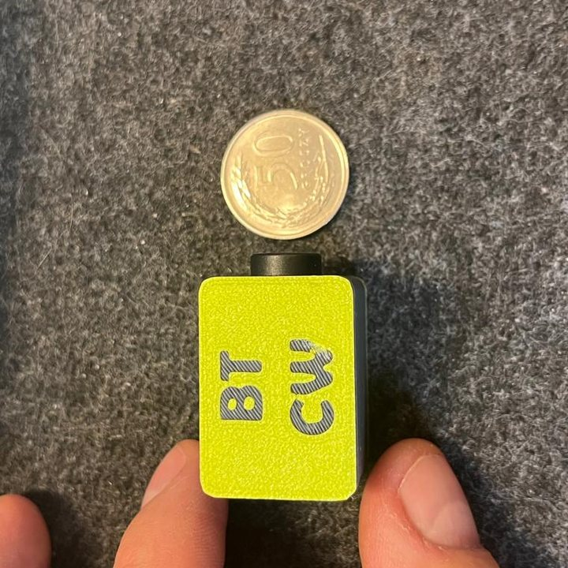
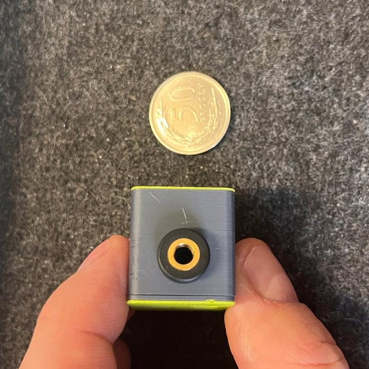

BT CW – the whole adapter, with a 50-grosz coin for scaleBT CW – cała przystawka, moneta 50 gr dla skali

The 3.5 mm stereo jack – plug the paddle in hereGniazdo jack 3,5 mm stereo – tu wpinasz kluczBT CW – a Bluetooth paddle adapterBT CW – klucz CW przez Bluetooth
A tiny adapter that turns an iambic paddle into a Bluetooth keyboard. Inside the 3D-printed case there is an ESP32-C3 SuperMini board and a 3.5 mm stereo jack – the board reads the paddle contacts and sends arrow keys: ← dit, → dah (a squeeze sends both).
Mała przystawka, która zamienia klucz łopatkowy (paddle) w klawiaturę Bluetooth. W obudowie z druku 3D siedzi płytka ESP32-C3 SuperMini i gniazdo jack 3,5 mm stereo – płytka czyta styki łopatek i wysyła strzałki: ← kropka, → kreska (przy squeeze obie naraz).
The keyer itself runs in the browser, in my CW trainer – so the paddle works in any browser, on phones and tablets too, with no cable, no drivers and no Web Serial. Paired once, it reconnects by itself whenever it gets power.
Sam keyer działa w przeglądarce, w moim trenerze CW – dlatego klucz działa w każdej przeglądarce, także na telefonie i tablecie, bez kabla, sterowników i Web Serial. Raz sparowany łączy się sam po podłączeniu zasilania.
- BoardPłytka
- ESP32-C3 SuperMini
- LinkŁączność
- Bluetooth LE · HID „CW Paddle”
- PaddleKlucz
- 3.5 mm stereo jackjack 3,5 mm stereo
- KeysKlawisze
- ← dit · → dah← kropka · → kreska
- PowerZasilanie
- USB-C · charger or power bankUSB-C · ładowarka albo powerbank
- Firmware
- Arduino · paddle_ble.ino
WiringPołączenia
ConnectionsTabela połączeń
| Paddle jackJack klucza | FunctionFunkcja | ESP32-C3 |
|---|---|---|
| Tip | ditkropka (dit) | GPIO5 |
| Ring | dahkreska (dah) | GPIO21 |
| Sleeve | groundmasa | GND |
- No resistors – the inputs use internal pull-ups, so a pressed paddle simply shorts its pin to GND.
- Bez rezystorów – wejścia mają wewnętrzne podciąganie, więc naciśnięta łopatka po prostu zwiera pin do masy.
- Use a stereo plug and cable – a mono plug shorts the ring to ground and you get a constant dah.
- Wtyk i kabel muszą być stereo – wtyk mono zwiera pierścień z masą i klucz nadaje ciągłą kreskę.
- GPIO21 is the TX pin – don't hold the dah paddle while powering up.
- GPIO21 to pin TX – nie trzymaj kreski przy podłączaniu zasilania.
Getting startedUruchomienie
- Upload the sketchWgraj szkic Arduino IDE with the esp32 board package (Espressif) 3.x, board “Nologo ESP32C3 Super Mini”. No extra libraries – the sketch uses the built-in BLE library. Arduino IDE z pakietem płytek esp32 (Espressif) 3.x, płytka „Nologo ESP32C3 Super Mini”. Bez dodatkowych bibliotek – szkic używa wbudowanej biblioteki BLE.
- PairSparuj Bluetooth settings → Add device → “CW Paddle” (no PIN). The LED blinks while the board waits, goes off once connected and lights while a paddle is pressed. Ustawienia Bluetooth → Dodaj urządzenie → „CW Paddle” (bez kodu PIN). Dioda miga, gdy płytka czeka, gaśnie po połączeniu i świeci przy naciśniętej łopatce.
- SendNadawaj Open the CW trainer, pick Key → ESP32 (Bluetooth) and send in Morse Sea. In the Band simulator the paddle tunes the VFO. Otwórz trener CW, wybierz Klucz → ESP32 (Bluetooth) i nadawaj w Morzu Morse'a. W Symulatorze pasma łopatki stroją VFO.